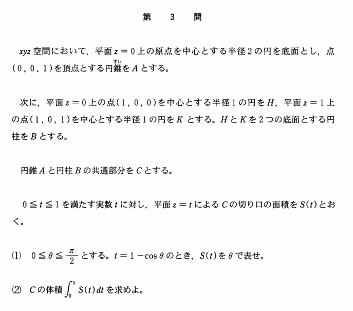

2003年 第3問
立体図形・積分

分析
空間図形の求積に変数変換を絡めた問題である。誘導の変換の意味を考える思考力、断面を正確に整理する力、角度によって図が変わることによる論理の厳密性、煩雑の計算をこなす計算力が要求される問題である。
まんべんなく高めのレベルで力を要求するこの問題は受験生に対しても差を生むことができる。計算は面倒だが。
誘導
空間図形の求積の問題の典型的な流れである、(1)で断面積、(2)で体積を求めるという解法の流れが与えられているので、これに従えばよいようになっている。
(1)の$\ t=1-\cos\theta\ $と置いた意味を考えることが重要になる。このようにおくと、$\ \theta\ $が原点と交点を結んだ線分の偏角となる。これに気づくことができないと、(1)から手つかずになる。
そして、この(1)の置き方は、背景のような大学数学を用いないといけないものに対して、適切な変数変換をすることによって、高校数学範囲内で求めることができるようになるようにするように設定されたもので、誘導としてはとても自然である。
背景
この問題の背景というよりかは、大学数学による別解になるが、重積分により(2)が(1)の誘導がなくとも解ける。
$$x^2+y^2\leq 4(z-1)^2\ ,\ (0\leq z\leq 1)$$
で表される円錐を
$$D=\{(x,y)|(x-1)^2+y^2\leq 1 \}$$
の領域で積分したものを、(2)で求めている。すなわち、円錐の式を変形すると$$z=1-\frac{1}{2}\sqrt{x^2+y^2}$$であるから、重積分を用いて(2)は
$$I=\int\int_D\ 1-\frac{1}{2}\sqrt{x^2+y^2}dxdy$$
と表せる。$$ x=r\cos \theta\ ,\ y=r\sin\theta\ $とすると、ヤコビアン$\ \det J=r \ ,\ (x-1)^2+y^2=1\ より\ r:0\rightarrow 2\cos\theta\ ,\ \theta:-\frac{\pi}{2}\rightarrow \frac{\pi}{2} \ であるから$$
$$I=\int_{-\frac{\pi}{2}}^{\frac{\pi}{2}}\int_{0}^{2\cos\theta}\left(1-\frac{r}{2}\right)\cdot r\ drd\theta$$
$$=\int_{-\frac{\pi}{2}}^{\frac{\pi}{2}} \left[\frac{r^2}{2}-\frac{r^3}{6} \right]_{0}^{2\cos\theta}d\theta$$
$$=\int_{-\frac{\pi}{2}}^{\frac{\pi}{2}} 2\cos^2\theta-\frac{4}{3}\cos^3\theta\ d\theta$$
$$=4\int_{0}^{\frac{\pi}{2}}\cos^2\theta \ d\theta-\frac{8}{3}\int_{0}^{\frac{\pi}{2}}\cos^3\theta\ d\theta$$
$$=4\cdot \frac{\pi}{4}-\frac{8}{3}\cdot\frac{2}{3}$$
$$=\pi-\frac{16}{9}$$
と計算できる。(2)のみでは高校数学では難しいがために、(1)の誘導を付け足すとうまい変数変換を与えることで高校数学で解けるようにするという誘導の仕組みである。